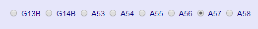
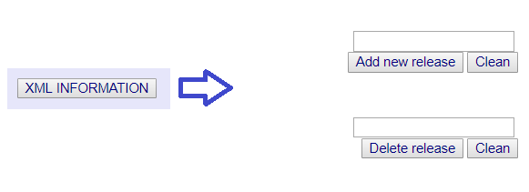
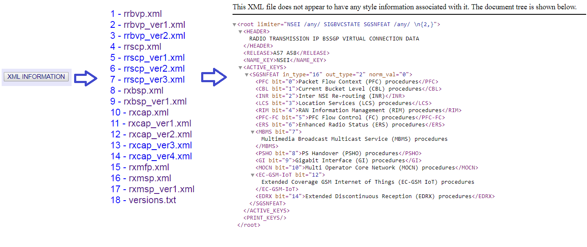

User-friendly parser was made to pars printouts.It must give in the output table with the massages with were taken from the documentation.
To have correct information at the output table, before adding printouts information, you must to choose correct version of release.

If you don’t choose the version, program will take default.
Also, using button “XML INFORMATION” , you can add new version of release or delete it.

Information about configuration files with were add before you can find using button “XML INFORMATION”. Here you can open any configuration file to read.
